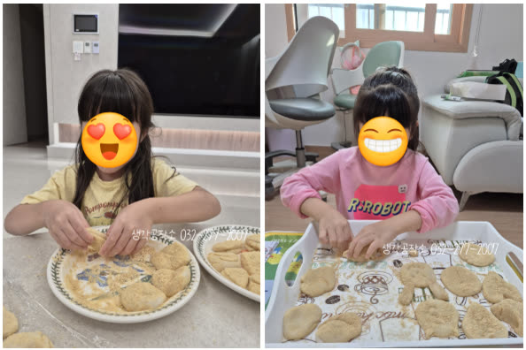
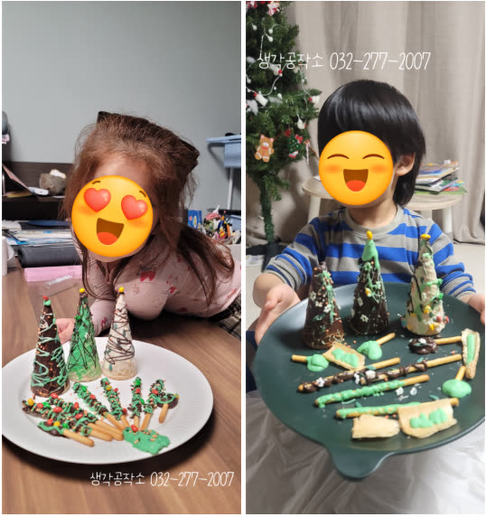
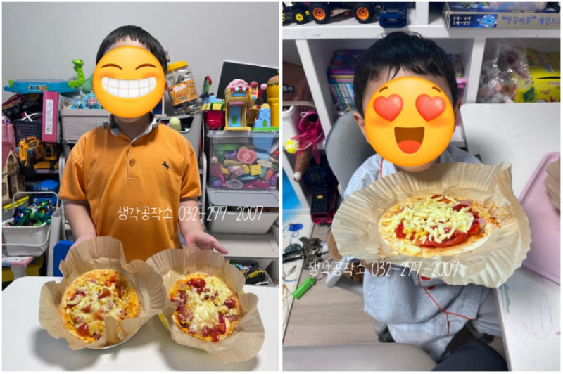
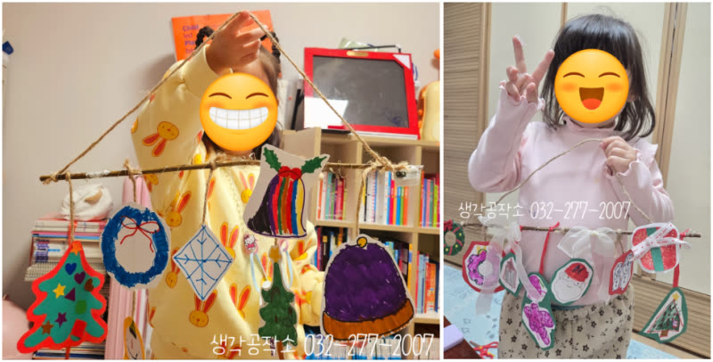
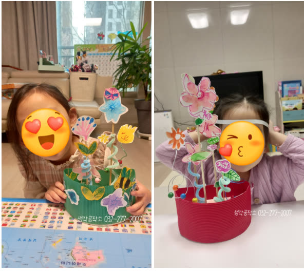
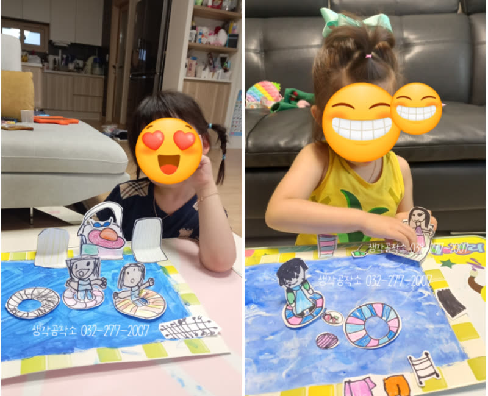
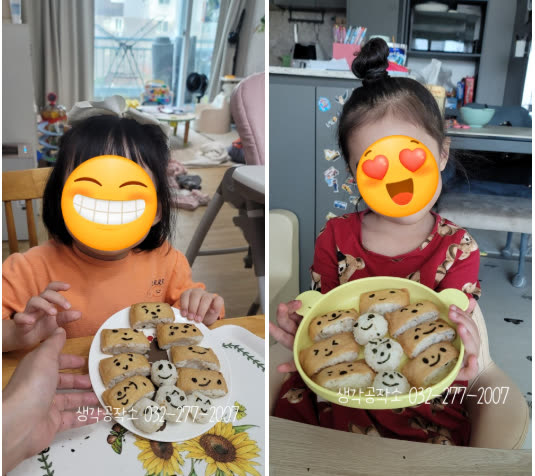

오감쑥쑥 바우처, 아이에게 '오감'이 중요한 이유 - 통합놀이와 발달
안녕하세요, 생각공작소입니다 :)
"우리 아이 발달, 이대로 괜찮을까요?"
"오감 자극이 중요하다는데, 왜 그럴까요?"
"4-6세, 무엇을 경험해야 할까요?"
아이를 키우는 부모님이라면
한 번쯤 하게 되는 고민들입니다.
오늘은 아동기 오감 발달이 왜 중요한지,
생각공작소가 오감쑥쑥 프로그램을
어떻게 풀어내는지 함께 나눠볼게요 📚
🧠 아동기, 뇌가 가장 빠르게 자라는 시기
만 0-6세는
뇌 발달의 황금기입니다.
특히 이 시기 아이들의 뇌는
'경험'을 통해 연결되고 발달합니다.
그리고, 그 경험의 대부분은
'감각'을 통해 들어옵니다.
촉각 : 손으로 만지며 배우다

아이들은 책으로 '딱딱함'을 배우지 않습니다.
돌을 만지고, 물을 만지고, 흙을 만지며 🖐🏻
'이건 딱딱하고, 이건 부드럽구나'를
온몸으로 이해합니다.
시각 : 보며 구별하다

색깔, 크기, 모양
그림으로만 보는 것과
실제로 보는 것은 👀
뇌에 남는 정보의 깊이가 다릅니다.
후각 / 미각 : 냄새와 맛으로 기억하다

"고구마 냄새 맡아봤어?"
냄새는 기억과 가장 강하게 연결됩니다.
요리 활동이 강력한 이유죠. 👃🏻
청각 : 듣고 구별하다

종소리, 바스락 소리, 재료 만지는 소리
다양한 소리를 듣는 경험이
언어 발달의 기초가 됩니다. 👂🏻
💡 왜 '통합놀이'가 중요할까요?
단일 감각보다
여러 감각을 동시에 쓸 때
뇌의 연결은 더욱 풍부해집니다.
- 그냥 '사과' 그림 보기 (시각 1개)
- 사과 만지고, 냄새 맡고, 맛보기 (3개)
후자가 뇌에 더 깊이 새겨지겠죠?
🌱 생각공작소는 어떻게 할까요?
생각공작소는 심리상담센터이자
오감발달 전문 기관입니다.
"오감쑥쑥! 생각쑥쑥!"
감각을 통해 경험하고 (오감쑥쑥),
그 경험을 통해 생각이 자라는 것 (생각쑥쑥)
아이의 발달을 바라보는 철학이에요. 😊
.
.
단순히 💭
"오늘 그림 그렸어요, 잘했어요"
로 끝나지 않습니다.
- 아이가 어떤 표현을 했는지
- 어떤 감정을 보였는지
- 어떤 순간에 집중했는지
를 함께 봅니다.
심리상담센터로서의 배경이
자연스럽게 녹아 있는 거죠.💡
📌 오감쑥쑥 서비스란?
만 4-6세 아동 대상
정부 지원 통합놀이 프로그램입니다.
[링크: 오감쑥쑥 자세히 알아보기 ▼▼]
📸 25년, 아이들과 함께한 시간들



봄:
- 꽃 모양 롤샌드위치 만들기
- 봄 정원 꾸미기
- 우리 동네 탐험
여름:
- 수영장 만들기
- 나만의 여름 슬리퍼
- 과일 화채 만들기
가을:
- 보름달 만들기
- 고구마 고슴도치
- 다람쥐 밤송이
겨울:
- 크리스마스 트리
- 솔방울 케이크
- 스케이트 만들기
(이외 훨씬 다양한 활동)
동화를 읽고 → 만들기로 표현하고
계절을 느끼고 → 요리로 경험하고
규칙을 배우고 → 보드게임으로 익히고
하나의 주제를
여러 감각으로 경험하는 시간.
이게 생각공작소가 '통합놀이'를
풀어가는 방법입니다 :)
아이 발달에서
오감 자극이 왜 중요한지,
생각공작소는 어떻게 접근하는지
조금이나마 전달이 되었길 바랍니다
아이들이 가장 기다리고 설레는
소중한 시간을 생각공작소와 함께
긍정적인 경험으로 채워가시길 바랍니다 🌱
더 궁금한 점이 있으시다면
언제든지 문의해 주세요!
오감 쑥쑥! 생각 쑥쑥!
📞 생각공작소 032-277-2007